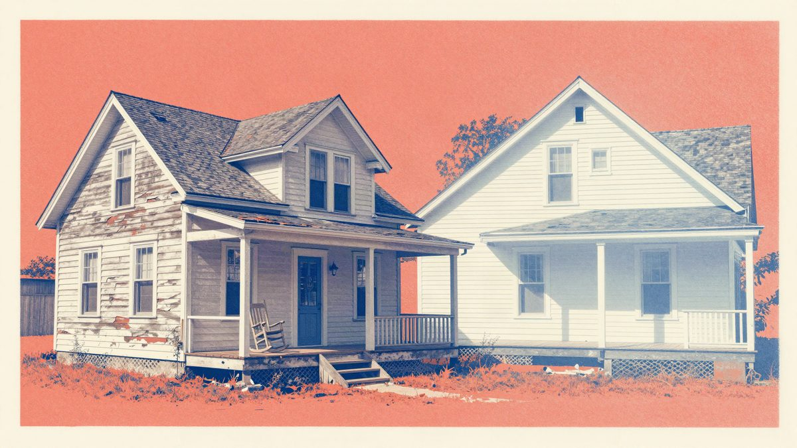

Zillow oglas za oronulu kuću u Michiganu prikazuje AI slike uređenog doma, cijena oko 70.000 eura

Oglas na Zillowu za trosobnu kuću u Cheboyganu u Michiganu za oko 70.000 eura kao prvu fotografiju prikazuje AI sliku uređene kuće, iako ostale fotografije pokazuju oronulu zgradu s oštećenjima od vode. U oglasu piše da su slike "poslije" samo za inspiraciju. Neke američke savezne države već traže označavanje izmijenjenih fotografija, a Manitoba je ovaj tjedan predstavila plan zabrane AI slika u oglasima za nekretnine.
Na Zillowu se prodaje trosobna kuća u Cheboyganu u Michiganu za 80.800 dolara (oko 70.000 eura). Prva fotografija u oglasu prikazuje njegovanu kuću u craftsman stilu s dva dormer prozora, kamenom stazom kroz uređen travnjak i velikom drvenom terasom sa stolicom za ljuljanje. Ta je slika generirana umjetnom inteligencijom, a stvarna kuća izgleda posve drugačije.
Ostale fotografije prikazuju oronulu zgradu. Unutra ima smeća, a gips koji otpada sa stropa upućuje na opsežna oštećenja od vode. Na poleđini kuće vidi se otvor veličine dvostrukih vrata. Susjedna kućica navodno je uništena neobrezanim stablom.
Što piše u oglasu
U oglasu stoji da fotografije uključuju stanje prije obnove, stanje tijekom radova i konceptualne slike "poslije", koje su "samo za inspiraciju i ne prikazuju dovršene radove". Vlasnik je počeo obnavljati kuću, ali je zbog zdravstvenih okolnosti ne može dovršiti. Kuća se prodaje u viđenom stanju i treba daljnju obnovu. Oglas spominje i hobby farmu, manje poljoprivredno gospodarstvo, držanje životinja ili mini zoo.
Futurism piše da kuća s AI slika ne bi stala ni na postojeće temelje. Taj portal navodi i da je kuća u siječnju 2020. bila na tržištu za 23.000 dolara (oko 20.000 eura), no čini se da prodaja tada nije uspjela.
Reakcije i propisi
Oglas je izazvao negodovanje na društvenim mrežama. Jedan korisnik Reddita napisao je da se lažnim slikama prikazivanje stanja kuće treba tretirati kao prijevaru. Drugi, koji trenutno traži dom, tvrdi da je prikazivanje "potencijala" AI slikama sada vrlo često.
AI slike u oglasima za nekretnine nisu novost. Futurism je ranije pisao o agentu koji je slučajno objavio izmijenjenu fotografiju kupaonice u kojoj se iz zrcala pojavljuje lik nalik na demona.
Neki propisi američkih saveznih država već traže označavanje digitalno izmijenjenih fotografija. To vrijedi u Kaliforniji, a u Wisconsinu će vrijediti od 1. siječnja 2027. Kanadska provincija Manitoba iznijela je ovaj tjedan plan zabrane AI slika u oglasima za nekretnine. Hoće li slično uvesti ostale države ili savezna vlada, za sada nije poznato.
Izvor: Futurism